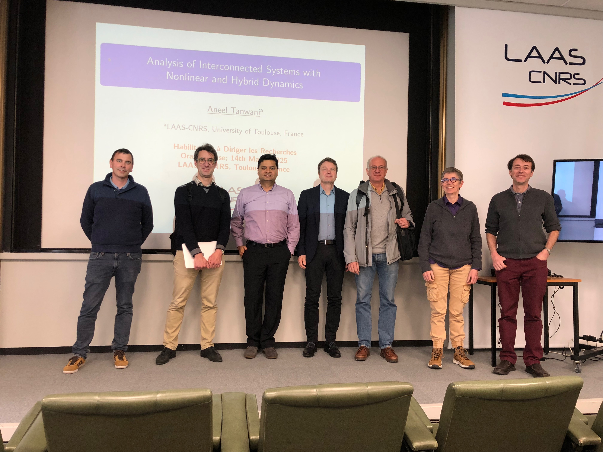

Aneel Tanwani
Researcher, LAAS - CNRS
Habilitation à Diriger des Recherches
Analysis of Interconnected Systems with Nonlinear and Hybrid Dynamics

- Submission of Manuscript: December 6th, 2024
- Date of Defence: March 14th, 2025
- Recording of the Presentation: HDR Defence Talk
- Manuscript: Final Draft
- Reviewers:
- Antoine Girard, Directeur de Recherche, CNRS, France
- Lars Grüne, Professor, University of Bayreuth, Germany
- Joao Hespanha, Professor, University of California at Santa Barbara, USA
- Examiners:
- Bernard Brogliato, Directeur de Recherche, INRIA, France
- Daniel Liberzon, Professor, University of Illinois at Urbana-Champaign, USA
- Christophe Prieur, Directeur de Recherche, CNRS, France
- Hyungbo Shim, Professor, Seoul National University, South Korea
- Marraine: Sophie Tarbouriech, Directrice de Recherche, CNRS, France
-
Abstract: The complexity of modern control systems can often be attributed to two elements: firstly, such systems involve logic-based decision making which results in dynamics at different time scales, and secondly, these systems comprise several subsystems which play an important role in shaping the properties of the integrated system. Following this viewpoint, the thesis addresses the analysis techniques for interconnection of systems described by switching, nonsmooth, or more generally, hybrid dynamics in both deterministic and stochastic framework.
Starting from some earlier work, we first present the classical cascade configuration for time-dependent switched systems where the stability conditions are formulated for a certain class of switching signals using multiple Lyapunov functions, and the notion of input-to-state stability. As a generalization, and using the tools from nonsmoth analysis, we study the feedback interconnections of Filippov differential inclusions (for state-dependent switched systems) with application to observer-based control, and anti-maximal monotone differential inclusions (for projected systems, complementarity systems, and sweeping processes) with application to analyzing certain optimization algorithms. Moving forward, and in the spirit of studying a broader class of interconnections, we study graph-coupled nonlinear systems where the exchange of information between agents is described by switching, but jointly-connected, graphs. The analysis of such systems is carried out by developing singular perturbation theory for hybrid systems, where we propose a novel decomposition of hybrid systems resulting in a continuous-time quasi-steady-state system and a purely discrete-time boundary layer system with constrained switching. We provide conditions for asymptotic practical stability, which in the setting of graph-based interconnections, translate to checking some properties of the graphs and the stability of reduced-order subsystems.
In the final part of the thesis, we step away from the deterministic framework and study interconnections in stochastic setting that appear in the design of certain filtering algorithms. The first such class of interconnections is seen in ensemble filters (for systems described by stochastic differential equations and discrete observations) where we propose algorithms for computing the approximation of the posterior distribution of the state conditioned upon the measurements by simulating particles resulting from continuous-discrete McKean-Vlasov type differential equations. We then develop appropriate tools for analyzing the interconnection of particles coupled to each other via the empirical mean and empirical covariance. Another class of interconnections is seen in studying filtering algorithms with unknown parameters (such as noise covariances), where we use Bayesian inference algorithms and the optimal estimate is described by a probabilisitic weighted sum of the conditional posteriors. Under certain assumptions on system dynamics, we study asymptotic convergence for such algorithms towards the optimal solution determined by complete information of the parameters.